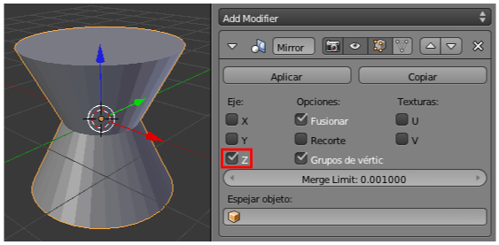

Simétricos
Base teórica
Muchos objetos son simétricos, como puede ser un rostro. Para esas ocasiones dispondremos de un modificador que nos hará todo el trabajo mientras nosotros nos ocupamos sólo de modelar una de las mitades. Supone un tipo de simetría que denominaremos interactiva.
Sacamos a escena un cono (Añadir/Malla/Cono) y le aplicamos el modificador Espejo. Aparentemente no ocurrirá nada en el editor Vista 3D aunque en realidad se han producido automáticamente varias ediciones:
- El cono se ha duplicado con vinculación (algo así como un "Alt_D")
- Se ha espejado respecto al plano perpendicular a X y, por lo tanto, su apariencia no cambia ya que este objeto es simétrico respecto a ese plano (también lo es respecto al plano perpendicular a Y).
Por lo tanto, para ver en acción las consecuencias del modificador Espejo debemos ir a sus opciones y cambiar Eje X por Eje Z.

En Modo Objeto  se comporta como un sólo elemento pero desde Modo Edición
se comporta como un sólo elemento pero desde Modo Edición  ocurre algo muy similar a Duplicar vinculado. Si seleccionamos todos los vértices "A" y desplazamos en Z...
ocurre algo muy similar a Duplicar vinculado. Si seleccionamos todos los vértices "A" y desplazamos en Z...
Una vez comprendida la teoría elemental vamos con los consejos fundamentales para trabajar correctamente con este modificador. Lo más habitual es que el objeto inicial sea un cubo y que su simetría sea vertical y no horizontal como ocurría en el caso del cono. Lo primero de todo es eliminar aquella cara que coincide con el supuesto eje de simetría.
Ahora aplicamos el modificador Espejo y vemos cómo la cara que hemos quitado queda tapada por el segundo cubo simétrico. Pasamos a Modo Edición  , seleccionamos todos los vértices "A" y desplazamos.
, seleccionamos todos los vértices "A" y desplazamos.
Uno de los grandes potenciales de este modificador es ordenarle que haga una soldadura automática de los vértices que se encuentran en el plano de simetría. Para ello:
- Nos aseguramos de que los vértices se solapen.
- Activamos la opción Limitar. De esta manera cuando volvamos a deslazar los vértices veremos que se ha producido la soldadura mencionada.
Trabajar así es realmente confortable tal como veremos en un proyecto real. Vamos a modelar una mesa escolar poniendo el punto de atención en el modelado de las patas.
Editamos el cubo de la escena inicial para que tome las proporciones de la mesa.
Añadimos un cilindro (Añadir/Malla/Cilindro) sin los vértices de las tapas y escalamos teniendo en cuenta que será usado para los tubos de las patas. Lo colocamos en el supuesto punto de contacto con el suelo.
Hubiéramos podido hacer este desplazamiento desde Modo Edición  y así es muy probable que el Origen se hubiera mantenido alineado con el centro de la mesa, pero como no tenemos garantías hacemos los ajustes necesarios (desde Modo Objeto
y así es muy probable que el Origen se hubiera mantenido alineado con el centro de la mesa, pero como no tenemos garantías hacemos los ajustes necesarios (desde Modo Objeto  ):
):
- Seleccionamos la mesa y usamos Objeto/Adherencia/Cursor a seleccionado.
- Seleccionamos el cilindro y usamos la opción Origen/Origen al Cursor 3D del cuadro de Herramientas ("T").
Conseguimos así que el origen del cilindro esté, no sólo alineado con el de la mesa, sino coincidiendo con él.
Aplicamos al cilindro el modificador Espejo. La consecuencia es inmediata. Como el Origen no está en el centro del cilindro, no ha ocurrido aquello que pasó con el cono porque, tal y como estamos comprobando, el eje de simetría lo determina el Origen.

Como también queremos las simétricas a estas dos, activamos la simetría en Eje Y.
Llega la hora de pasar a Modo Edición  , seleccionar el bucle superior del
cilindro y comenzar a modelar la pata. Al llegar a la curva usamos
extrusiones ("E") y giros ("R"). Si estamos colocados en el punto de vista
adecuado y con visión ortográfica el trabajo será muy agradable.
, seleccionar el bucle superior del
cilindro y comenzar a modelar la pata. Al llegar a la curva usamos
extrusiones ("E") y giros ("R"). Si estamos colocados en el punto de vista
adecuado y con visión ortográfica el trabajo será muy agradable.
Al llegar a la unión no olvidaremos activar (o tener activada antes) la opción Limitar para que se haga la soldadura.
A partir de ahí el modelado no incluye nada nuevo respecto a lo ya estudiado.
Añadir Superficie subdividida
Dos son los asuntos a considerar si queremos hacer convivir en una misma malla el modificador Espejo con el de Subdivisión:
- La malla no debe tener caras que coincidan con el plano virtual de simetría si se va a usar la opción Limitar. Es por eso que en la explicación de arriba eliminamos una de las caras del cubo aunque en aquel momento no aplicamos Subdivisión.
- Aplicamos el modificador Subdividir cuando la malla tenga una buena cantidad de vértices como por ejemplo en este modelado...
Es un pez para explicar sus diferentes aletas. Hemos optado por un diseño no realista, con un aire cartoon.